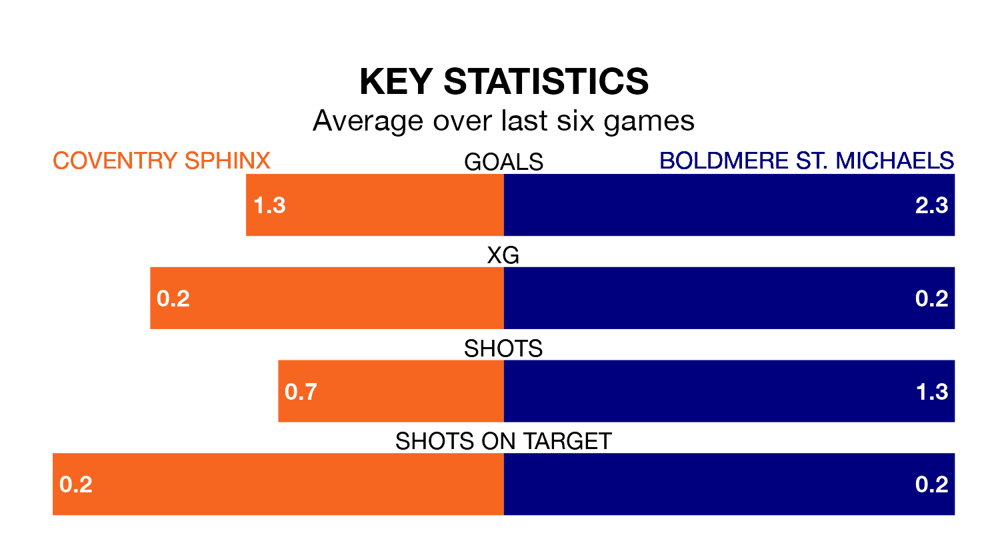

Boldmere St. Michaels travel to Coventry Sphinx on Saturday in the Northern Premier League Division One Midlands.
The visitors come into the game on the back of a draw in their last match, having tied with AFC Rushden and Diamonds 2-2 at home.
Coventry Sphinx, meanwhile, lost their last match, 5-1 against Anstey Nomads.
Coventry Sphinx are 17th in the table after 34 games, of which they have won six and drawn 12, earning 30 points.
Boldmere St. Michaels are four places ahead of the home side in 13th, with 13 wins and five draws putting them on 44 points.
With 34 goals in 34 games so far this season, Coventry Sphinx are the league's joint-third-lowest scorers with 1.0 goals per game. And they are conceding more than average, letting in 61 goals at a rate of 1.8 per game.
The visitors, meanwhile, are above average scorers, with 1.7 goals per game, compared to a league average of 1.6. They have conceded 1.4 goals per game.
Coventry Sphinx are in disappointing form in the Northern Premier League Division One Midlands, with one win and two draws from their last six games.
With three wins and a draw over that period, Boldmere St. Michaels's form is better – they have taken 10 points from 18, compared to the hosts' five.
Updated: 11:31 (UTC), 15/04/24